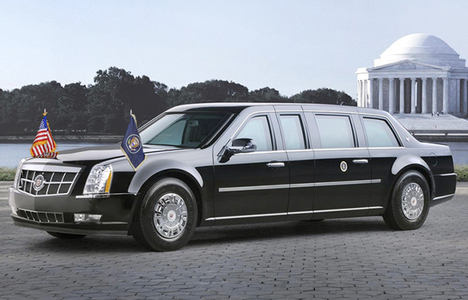
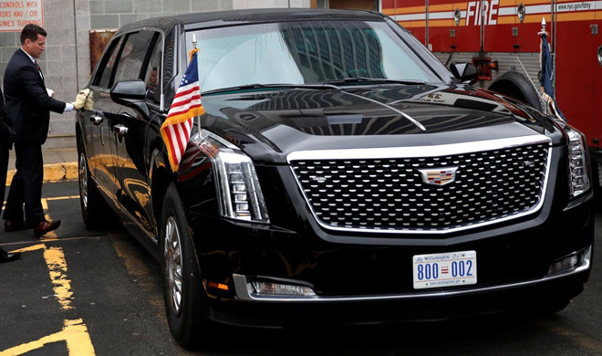
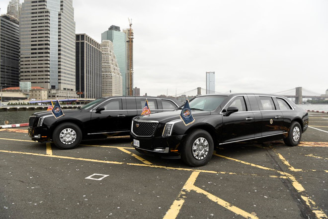

1.Mỹ - Cadillac One - Xe 'quái thú' mới của ông Trump giá 1,5 triệu USD, có thể phóng điện
Tổng thống Obama được biết đến với chiếc limousine biệt danh "quái thú", Chi phí để xây dựng xe hộ vệ tổng thống Mỹ trị giá gần 16 triệu USD. Mỗi chiếc The Beast 2.0 có giá 1,5 triệu USD, tương đương 35 tỷ đồng.Sau khi mẫu limousine The Beast mới lộ diện, Tổng thống Mỹ Donald Trump đã nhận không ít lời chỉ trích vì số tiền đầu tư quá lớn. Thế nhưng nếu xét về sự hiện đại và mức độ an toàn mà nó mang lại, chiếc xe này đáng giá từng xu. Phiên bản mới nhất của chiếc limousine tổng thống sở hữu những công nghệ hàng đầu và thông số kỹ thuật mạnh mẽ.Chiếc Cadillac hộ tống thế hệ mới đưa ông Donald Trump đến New York tham dự Đại hội đồng Liên Hợp Quốc. Có đến 2 mẫu xe đã được hoàn thiện và thực hiện nhiệm vụ lần này.

"Chiếc Cadillac 2018 này tiếp tục thực hiện nhiệm vụ với chính phủ, phát huy những di sản nghệ thuật, công nghệ và hiệu suất với sứ mệnh bảo vệ của nó" Jeffrey Adams, phát ngôn viên của cơ quan mật vụ trả lời tờ Detroit Free Press."Quái vật" mới nặng 7 tấn, hơn cả khủng long bạo chúa Tyrannosaurus Rex và tương đương loài voi châu Phi. Trên xe trang bị tủ lạnh chứa máu dự phòng trùng với nhóm máu của tổng thống, phòng trường hợp cần truyền máu khẩn cấp, 12 lon nước ngọt hoặc trà để phục vụ tổng thống mỗi ngày.Cadillac The Beast mới được bọc thép, nhôm và gốm sứ, sử dụng khung gầm của mẫu bán tải hạng nặng Chevrolet Kodiak. Lốp xe kích thước lớn có thể di chuyển ngay cả khi bị thủng.Các tấm thân xe dày ít nhất 8 inch, cửa sổ và cửa ra vào dày 5 inch và nặng như cửa máy bay Boeing 757. Mẫu xe này còn chống được các cuộc tấn công sinh-hóa học, trang bị hệ thống hỗ trợ tầm nhìn ban đêm. Đặc biệt xe còn có thể phóng hơi cay hoặc khói mù để ngăn cản xe truy đuổi.

Người lạ sẽ không thể mở cửa xe bởi tay nắm cửa có chức năng phóng điện. Cadillac The Beast bản mới còn sử dụng hệ thống liên lạc bảo mật, tổng thống Mỹ có thể ra lệnh phóng tên lửa hạt nhân ngay từ trên xe.The Beast mới là hậu bối của chiếc limousine The Beast, ra đời năm 2009 và được cựu Tổng thống Mỹ Barack Obama sử dụng. Trong một tập của chương trình "Comedians in Cars Getting Coffee", ông Obama từng diễn tả The Beast là mẫu xe cực kỳ êm ái làm trên khung của một chiếc xe tăng. "Quái vật" mới còn hiện đại và an toàn hơn tiền nhiệm.The Beast thế hệ mới có lực lượng vận chuyển riêng. Chiếc máy bay vận tải Globemaster C17 sẽ đưa The Beast mới cùng chiếc SUV Chevrolet Suburban bọc thép đến tất cả địa điểm mà ông Donald Trump đặt chân đến.Mỗi chiếc The Beast mới trị giá 1,5 triệu USD, tổng chi phí của dự án xe hộ tống mới lên đến 15,8 triệu USD. Nó có thể bảo vệ ông Donald Trump khỏi nhiều mới nguy nhưng với mức đầu tư đắt đỏ, nó khó có thể bảo vệ ông khỏi những chỉ trích của các nhà phê bình chính trị Mỹ.
